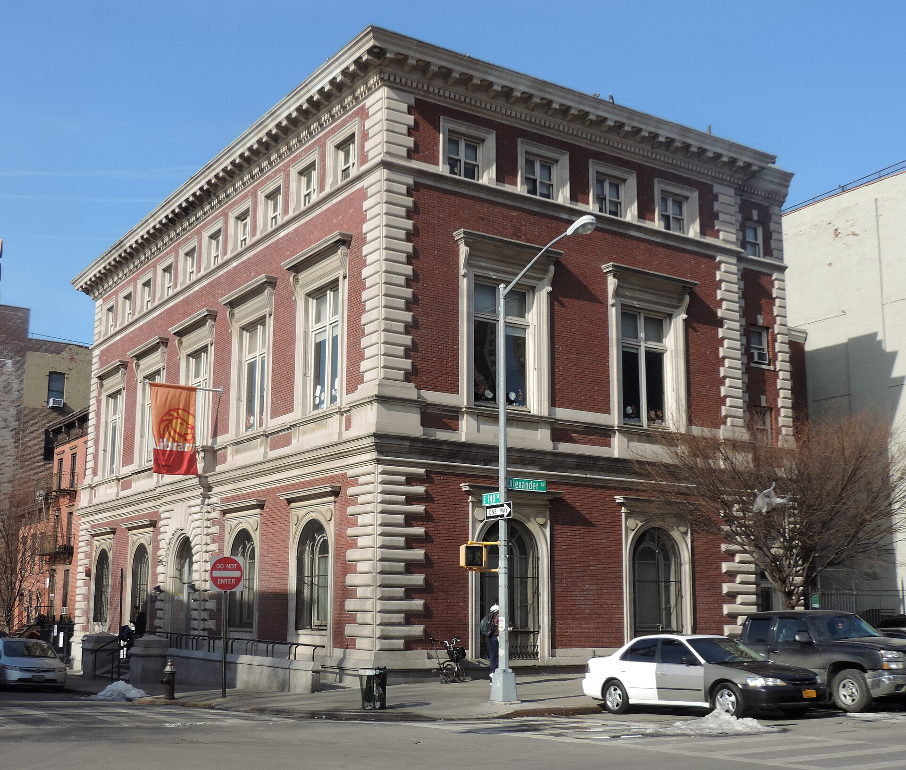

The monitored site with the largest PM2.5 rise inside a state-designated disadvantaged community, chosen automatically from Part I, gets a planting response sized to its street canyon.
Why Mott Haven. Mott Haven carries the highest pre-existing environmental burden of any monitored corridor: one of the highest pediatric asthma rates in New York State, a 4.0% tree canopy against a 22.1% citywide average, nine school entries (six physical buildings) within 400 m of the monitor, and direct adjacency to major truck routes and the Major Deegan and Cross Bronx expressways. The toll's signal at this site is directionally uncertain: full-model β = +0.30 µg/m³ (p = 0.61), step-only β = −0.65 µg/m³ (p = 0.01); the sign depends on the trend assumption. The case for intervention rests on the pre-existing conditions, not on a proven toll impact.

Existing street trees sized by trunk diameter, building footprints coloured by height, and the computed height-to-width ratio. The monitor is the black cross.
A continuous canopy over a narrow street can trap air beneath it, so the removal each typology earns in the open is discounted by the canyon's height-to-width ratio: no discount at 0.5, 60% at 2.5. This is why the answer is a particular typology and not simply more trees.
A sapling removes almost nothing. The model credits each typology with 10% of its mature removal in year one, 55% by year ten and 90% by year twenty, following trunk-growth rates for New York street trees.
Selected for tolerance of road salt, compacted soil and the pollution load of a truck corridor, with a mature crown that fits under the expressway's clearance where the street runs beneath it.
The three corridor-wide typologies treat the street uniformly. This fourth addresses a specific question: what about the exact locations where children are present for six or more hours a day?
Typology 4: Green screen. A dense vegetative barrier — modular living wall panels or a wire-and-vine trellis — installed at school playground and entrance frontages directly facing the truck corridor. Sized to the actual street frontage of the two closest schools: P.S. 043 Jonas Bronck and Mott Haven Academy Charter School, both on Brown Place, 76–114 m from the NYCCAS monitor. Estimated frontage: 180 ft (55 m). The same canyon-geometry discount and i-Tree-derived removal rate methodology as the other typologies.
Compared with the three corridor-wide typologies, the green screen removes less PM2.5 in absolute terms — its surface area is a small fraction of the full corridor. But it is placed where it matters most: at the breathing level of children during school hours, at the buildings the monitor cannot distinguish from the rest of the block.
NYC Admin Code §24-163 limits idling to one minute in school zones. The green screen and the idling law are complementary instruments: the law limits new emissions at school frontages; the green screen intercepts what arrives from the corridor regardless of source.
| Typology | Naive removal (kg/yr) | Canyon-adjusted (kg/yr) | Stormwater intercepted at maturity (kL/yr) | Scope |
|---|---|---|---|---|
Loading… | ||||